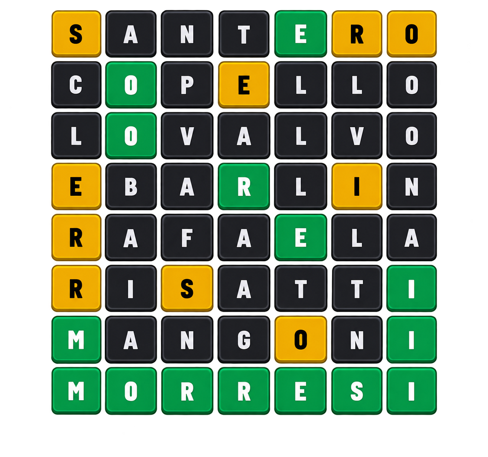

Wordle TC

En el Wordle TC tenés que encontrar la palabra relacionada al TC. Puede ser un piloto o un circuito. Tenés 6 intentos para descubrirla.
- Verde: letra correcta en el lugar correcto.
- Amarillo: letra correcta, pero en el lugar incorrecto.
- Gris: la letra no está en la palabra.
El teclado marcará las letras que ya utilizaste para ayudarte a descubrir la palabra.
Wordle del TC
Adiviná la palabra de hoy
Escribí con tu teclado o tocá el teclado de abajo.
Intentos disponibles
Nueva palabra en: --:--:--